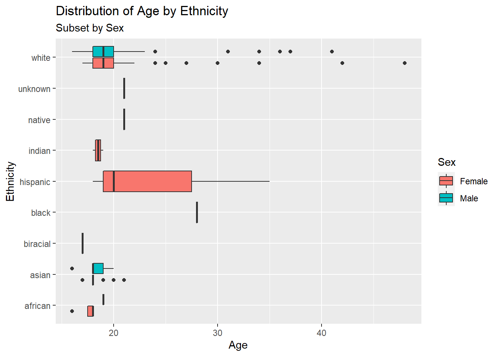

library(tidyverse)Lab 3: Hip-Hop Lyrics
Setup
Data Import
hiphop <- read_csv(here::here("supporting_artifacts", "hiphop.csv"))Dataset Summary
1. Overview
This dataset is focused on the familiarity which participants have with certain African-American English terms, and how this familiarity is related to their music preferences. The dataset contains a category of specific AAE words which were tested. It also contains a number of self-reported demographic data categories, such as ethnicity, sex, age, and location, as well as information on the genres of music that the participant enjoys, such as hip-hop.
There were 168 subjects in this study which were undergraduates enrolled in linguistics, sociology, and music classes at the University of Minnesota. Their familiarity was coded on a 5 point Likert scale from 1 (no familiarity) to 5 (good familiarity), as well as on a binary scale. Each subject was asked about 64 AAE words or phrases.
2. Rows
The rows of this dataset are each a unique combonation of a word and test subject.
3. Missing Values
The missing values were replaced with the mean values for the variable. The drawback of doing this is that it might not be representative of reality because the values are extrapolated. The benefit to doing this is that there are no longer any data points missing so it doesn’t require any additional data cleaning
4. Cleaning
hiphop_clean <- hiphop |>
drop_na(
word:popularityScore
)5. Distinct AAE Words
hiphop_clean |>
distinct(
word
) |>
count()# A tibble: 1 × 1
n
<int>
1 64There were 64 distinct AAE words studied.
6. White and Nonwhite
hiphop_clean <- hiphop_clean |>
mutate(
whiteNonwhite = if_else(
ethnic == 'white',
'white',
'nonwhite'
)
)7. Demographics Information
demographics <- hiphop_clean |>
distinct(
subj,
.keep_all = TRUE
) |>
mutate(
sex = as.factor(sex),
ethnic = as.factor(ethnic)
) |>
select(
sex,
age,
ethnic,
)
summary(demographics) sex age ethnic
Female:117 Min. :16.00 white :135
Male : 51 1st Qu.:18.00 asian : 19
Median :19.00 african : 5
Mean :20.02 hispanic: 3
3rd Qu.:20.00 indian : 2
Max. :48.00 biracial: 1
(Other) : 3 There were 168 test subjects in this study. Of the 168 subjects, 117 were female and 51 were male. Regarding ethnicity, 135 subjects were white, 19 were Asian, 5 were African, 3 Hispanic, 2 Indian, 1 biracial, 1 black, 1 native, and 1 unknown. The mean age of the subjects was 20.02 and the median age was 19.
8. Demographic Plots
ggplot(
demographics,
mapping = aes(x = age, y = ethnic, fill = sex)
) +
geom_boxplot() +
labs(
x = "Age",
y = "Ethnicity",
fill = "Sex",
title = "Distribution of Age by Ethnicity",
subtitle = "Subset by Sex"
)
ggplot(
demographics,
mapping = aes(x = age, y = sex)
) +
ggridges::geom_density_ridges(scale = 0.9) +
labs(
x = "Age",
y = "Sex",
title = "Distribution of Age by Sex"
)
Familiar Words
hiphop_clean |>
filter(
age < 20
) |>
select(
word,
familiarity
) |>
group_by(
word
) |>
mutate(
avg = mean(familiarity),
) |>
distinct(
word,
avg
) |>
summarize(
avg
) |>
filter(
avg == min(avg) |
avg == max(avg)
)# A tibble: 2 × 2
word avg
<chr> <dbl>
1 catch the vapors 1.03
2 off the hook 4.42For people under 20, the least familiar word was “catch the vapors” and the most familiar word was “off the hook.”
hiphop_clean |>
filter(
toupper(whiteNonwhite) == "NONWHITE",
toupper(sex) == "FEMALE"
) |>
select(
word,
familiarity
) |>
group_by(
word
) |>
mutate(
avg = mean(familiarity),
) |>
distinct(
word,
avg
) |>
summarize(
avg
) |>
filter(
avg == min(avg) |
avg == max(avg)
)# A tibble: 5 × 2
word avg
<chr> <dbl>
1 break someone out 1
2 dukey rope 1
3 feel me 4.19
4 plex 1
5 rollie 1 For nonwhite women the most familiar word was “feel me” and the least familiar words were “break someone out,” “dukey rope,” “plex,” and “rollie.”
hiphop_clean |>
filter(
age > 30,
toupper(whiteNonwhite) == "WHITE",
toupper(sex) == "MALE"
) |>
select(
word,
familiarity
) |>
group_by(
word
) |>
mutate(
avg = mean(familiarity),
) |>
distinct(
word,
avg
) |>
summarize(
avg
) |>
filter(
avg == min(avg) |
avg == max(avg)
)# A tibble: 26 × 2
word avg
<chr> <dbl>
1 5-0 4.2
2 ay yo trip 1
3 beezy 1
4 break someone out 1
5 catch the vapors 1
6 crossroads 1
7 crump 1
8 dap 1
9 dollar cab 1
10 domino 1
# … with 16 more rowsFor white men over 30, the most familiar word was “5-0” and there were 25 unfamiliar words, including “dollar cab,” “dap,” and others.
Study Subjects
hiphop_clean |>
filter(
age >= 17,
age <= 23,
toupper(sex) == "MALE",
bieber >= 3,
city <= 60000,
city >= 10000
)# A tibble: 64 × 39
word subj sex age ethnic city county intl vocal class…¹ folk rock
<chr> <chr> <chr> <dbl> <chr> <dbl> <dbl> <dbl> <dbl> <dbl> <dbl> <dbl>
1 [to be… p17 Male 18 white 56377 331582 0 1 0 0 1
2 5-0 p17 Male 18 white 56377 331582 0 1 0 0 1
3 A-town p17 Male 18 white 56377 331582 0 1 0 0 1
4 ashy p17 Male 18 white 56377 331582 0 1 0 0 1
5 ay yo … p17 Male 18 white 56377 331582 0 1 0 0 1
6 ballin' p17 Male 18 white 56377 331582 0 1 0 0 1
7 beezy p17 Male 18 white 56377 331582 0 1 0 0 1
8 bones p17 Male 18 white 56377 331582 0 1 0 0 1
9 boo p17 Male 18 white 56377 331582 0 1 0 0 1
10 boughie p17 Male 18 white 56377 331582 0 1 0 0 1
# … with 54 more rows, 27 more variables: country <dbl>, pop <dbl>,
# alternative <dbl>, hiphop <dbl>, unclassifiable <dbl>, countyBlack <dbl>,
# jayz <dbl>, barkley <dbl>, boondocks <dbl>, monique <dbl>, bieber <dbl>,
# asianMove <dbl>, blackMove <dbl>, hispanicMove <dbl>, nativeMove <dbl>,
# SAAMEMove <dbl>, whiteMove <dbl>, blackWeekly <dbl>, jayz1 <dbl>,
# boondocks1 <dbl>, familiarity <dbl>, trial <dbl>, fam1 <dbl>,
# popularityScore <dbl>, numPreferredArtists <dbl>, …I think Justin Bieber was probably subject p17. This subject fits the information given about Bieber; he comes from a somewhat small town, is between the ages of 17 and 23, is male, and named a fair amount of Justin Beiber songs.